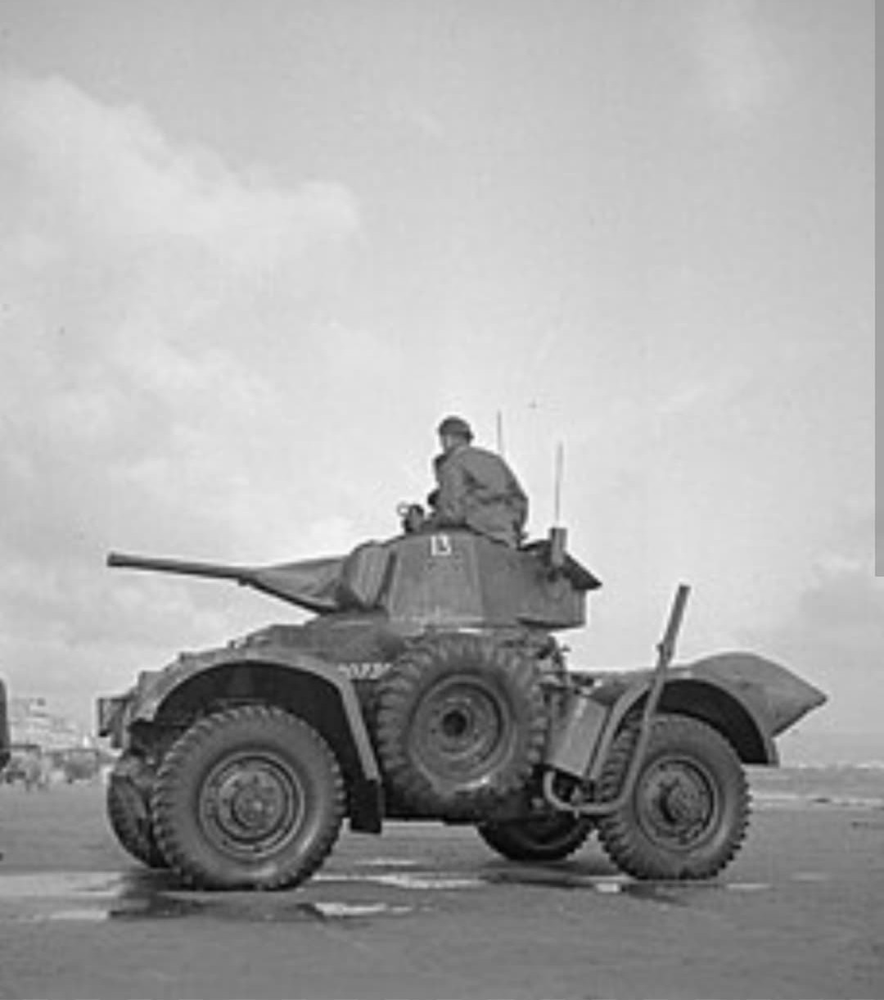
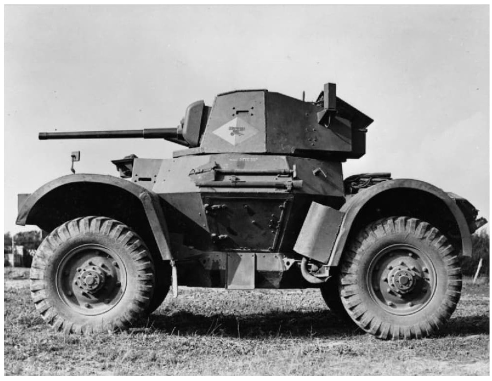
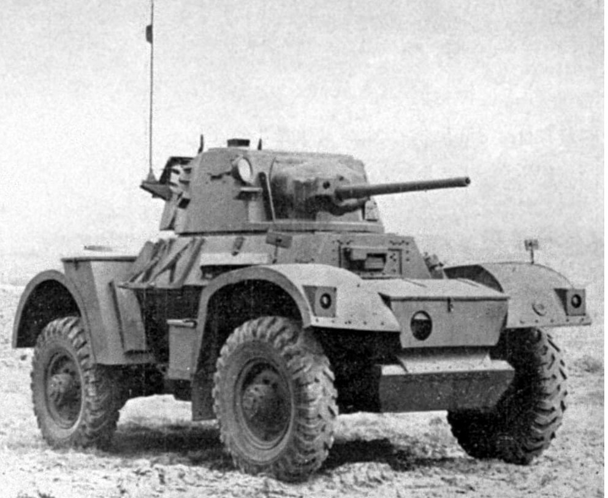

L'un des meilleurs véhicules blindés de reconnaissance à roues du second conflit mondial

La **Daimler Armoured Car** est une automitrailleuse lourde développée par la Daimler Company pour répondre aux besoins des unités de reconnaissance de l'armée britannique.
Considérée comme l'un des véhicules blindés à roues les plus réussis de la Seconde Guerre mondiale, elle associait une excellente mobilité tout-terrain, une transmission intégrale robuste et une puissance de feu équivalente à celle des chars légers de l'époque.
Développée à partir du châssis éprouvé du petit véhicule de liaison *Daimler Dingo* (Scout Car), l'automitrailleuse Daimler a été agrandie pour accueillir une tourelle blindée similaire à celle du char de croisière Tetrarch.
Sa conception mécanique était particulièrement innovante : elle disposait de quatre roues motrices indépendantes avec suspension à ressorts hélicoïdaux, d'un pré-sélecteur de vitesses Wilson et d'un inverseur de marche permettant de rouler aussi vite en arrière qu'en avant, une caractéristique vitale pour se dégager rapidement d'une embuscade.

Entrée en service actif au milieu de l'année 1941, la Daimler Armoured Car s'illustre d'abord en Afrique du Nord au sein du *Inns of Court Regiment* et des unités de reconnaissance de la 8e Armée.
Elle participe ensuite à la campagne d'Italie et au Débarquement de Normandie en 1944. Utilisée en avant-garde des colonnes blindées, elle servait à éclairer le terrain, contacter la ligne de front et harceler les avant-postes ennemis grâce à sa grande discrétion sonore et sa vitesse.

Produite à environ **2 694 exemplaires** entre 1941 et 1945, la Daimler Armoured Car a prouvé la grande efficacité des véhicules à roues rapides sur le théâtre européen.
Fiable et appréciée par ses équipages, elle est restée en service actif au sein de l'armée britannique jusque dans les années 1950, participant notamment à des opérations de maintien de l'ordre dans plusieurs territoires du Commonwealth après-guerre.
Page du Musée HOP WW2 – Section Véhicules Terrestres Britanniques